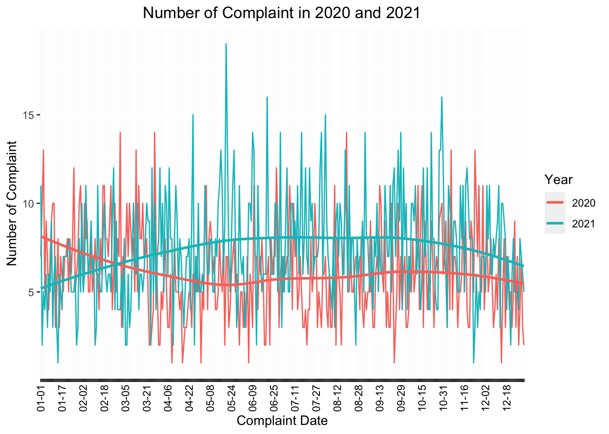
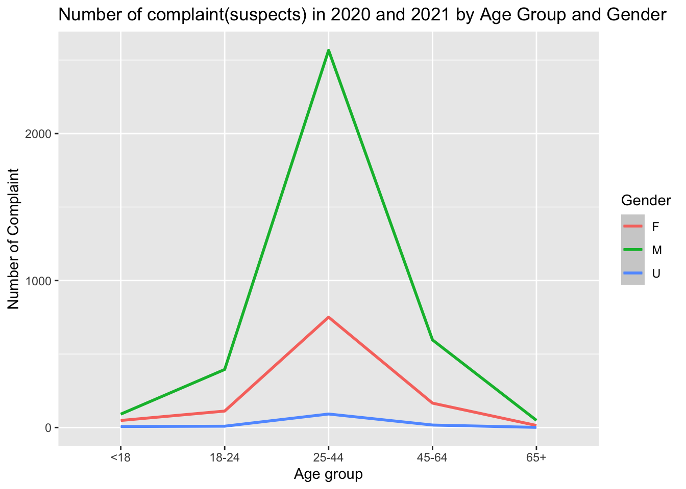
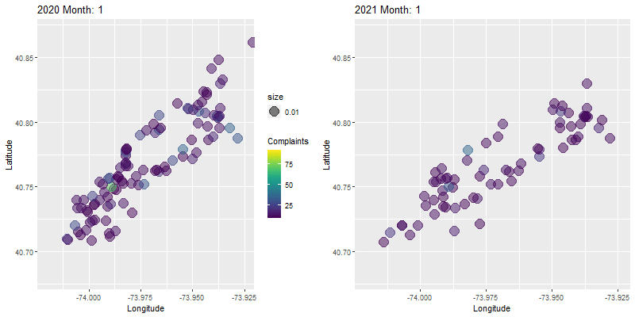

Final Project Report
Hengxuan Ma
2022-12-09
Motivation
(Motivation: Provide an overview of the project goals and motivation)
Crime rates in New York City have been recorded since at least the 1800s. The highest crime totals were recorded in the late 1980s and early 1990s as the crack epidemic surged, and then declined continuously through the 2000s. During the 1990s, the New York City Police Department (NYPD) adopted CompStat and other strategies in a major effort to reduce crime.
It is the fact that all of our team members have heard crime alerts from NYPD frequently in the past year. Although we believe that New York City is one of the safest big cities in the United States according to the FBI, we have been so curious about the detailed information of historical crimes happened in the New York City, especially in the pattern where we are currently living.
Since in recent years the COVID-19 has brought huge effects to people’s life, We are more interested in the changes of complaint each year from 2020 to 2021, especially in the Manhattan borough. In this project, we intended to explore the general information about complaint data in the past two years, and to figure out if COVID-19 influenced the rate or other attributes of crimes.
Thus, Our project aims to examine NYPD complaint data from January 2020 to December 2021 to understand the impact of COVID-19 on complaints (crimes) in Manhattan.
Reference: https://en.wikipedia.org/wiki/Crime_in_New_York_City
Related Work
(Related work: Anything that inspired you, such as a paper, a web site, or something we discussed in class.)

Pictured resource: https://maps.nyc.gov/crime/
Inspired by our regularly received crime alerts from Columbia University Department of Public Safety, when we mentioned the crime rate of NYC, all of our teammates showed great interest. When we googled it for more information, the NYC Crime Map gave us a shock on the actual number of crimes around us just from January 2021 to October 2022.
After some initial exploring, we successfully found that resources about NYC crime and complaint data are sufficient and detailed. Based on the information we have gathered, we decided to conduct our analysis on the most recently published NYPD Compliant Data, which contained plenty of attributes correlated with each complaint of crime happened and recorded in the New York City.
Initial Questions
(Initial questions: What questions are you trying to answer? How did these questions evolve over the course of the project? What new questions did you consider in the course of your analysis?)
Data
(Data: Source, scraping method, cleaning, etc.)
The raw data we used was from NYC OpenData: NYPD Complaint Data Historic: https://data.cityofnewyork.us/Public-Safety/NYPD-Complaint-Data-Historic/qgea-i56i
The NYPD Complaint Data is public and readily available. The data includes all valid felony, misdemeanor, and violation crimes reported to the New York City Police Department (NYPD) from 2006 to the last updated date, which was June 9, 2022 when we started our project.
The first and the most difficult challenge we have encountered was that the original data was too large to be downloaded and analyzed - the size was over 2 GB! It took us more than half an hour to obtain the whole raw data, which contained 35 variables and more than 7 million observations.
Then the first step to handle such a huge data set was to tidy out the part that we wanted to focuse on:
nypd_complaint_data =
read_csv("./data/NYPD_Complaint_Data_Historic.csv") %>%
janitor::clean_names() %>%
drop_na(cmplnt_to_dt,cmplnt_to_tm) %>%
separate(cmplnt_fr_dt, into = c("month", "day", "year")) %>%
mutate(year = as.numeric(year),month = as.numeric(month), day = as.numeric(day)) %>%
filter(year >= 2020)
write_csv(nypd_complaint_data, "./data/2020_nypd_complaint_data.csv")
nypd_complaint_2020_data =
read_csv("./data/nypd_complaint_data.csv") %>%
filter(year == "2020", boro_nm == "MANHATTAN")
nypd_complaint_2021_data =
read_csv("./data/nypd_complaint_data.csv") %>%
filter(year == "2021", boro_nm == "MANHATTAN")
nypd_complaint_two_year_data =
read_csv("./data/nypd_complaint_data.csv") %>%
filter(year %in% c("2020", "2021"), boro_nm == "MANHATTAN")
write_csv(nypd_complaint_2020_data, "./data/nypd_complaint_2020_data.csv")
write_csv(nypd_complaint_2021_data, "./data/nypd_complaint_2021_data.csv")
write_csv(nypd_complaint_two_year_data, "./data/nypd_complaint_two_year_data.csv")Since the original data was too large to be uploaded online, we only kept it in our local repository. After the initial cleaning of data, we made the following changes:
- clean all the variables’ name to be tidy enough to read, drop those complaint records without exact ending date or time of occurrence
- separate the exact date of occurrence for the reported event into month, day, year for further analysis
- keep only complaints occurred and recorded in year 2020 and 2021 (i.e., closely related with COVID-19 pandemic)
- choose the borough of Manhattan as our study of interest (i.e., strict the pattern to where we live)
- build new data frames from the resulted data and name as nypd_complaint_2020_data, nypd_complaint_2021_data, nypd_complaint_two_year_data for further analysis
nypd_complaint_2020_data =
read_csv("./data/nypd_complaint_2020_data.csv")
nypd_complaint_2021_data =
read_csv("./data/nypd_complaint_2021_data.csv")
nypd_complaint_two_year_data =
read_csv("./data/nypd_complaint_two_year_data.csv")After we obtained the three data sets above, nypd_complaint_2020_data had 88,484 observations of complaint data and nypd_complaint_2021_data had 101,990 observations of complaint data. nypd_complaint_two_year_data was the combination of data from both 2020 and 2021, which had 190,474 observations. Here were some of the important variables within all of the three data sets:
cmplnt_num: Randomly generated persistent ID for each complaintmonth: Exact month of occurrence for the reported eventday: Exact day of occurrence for the reported eventyear: Exact year of occurrence for the reported eventaddr_pct_cd: The precinct in which the incident occurredky_cd: Three digit offense classification codeofns_desc: Description of offense corresponding with key codeBORO_NM: The name of the borough in which the incident occurredsusp_age_group: Suspect’s Age Groupsusp_race: Suspect’s Race Descriptionsusp_sex: Suspect’s Sex Descriptionlatitude: Midblock Latitude coordinate for Global Coordinate System, WGS 1984, decimal degrees (EPSG 4326)longitude: Midblock Longitude coordinate for Global Coordinate System, WGS 1984, decimal degrees (EPSG 4326)vic_age_group: Victim’s Age Groupvic_race: Victim’s Race Descriptionvic_sex: Victim’s Sex Description
Exploratory Analysis
(Exploratory analysis: Visualizations, summaries, and exploratory statistical analyses. Justify the steps you took, and show any major changes to your ideas.)
Descriptive Statistics:
Comparisons of complaints in Manhattan between 2020 vs 2021:
As part of our research body, we conducted several comparisons between the two years based on our data sets.
Number of Complaints in Manhattan 2020 vs 2021: Since 2020 was the year that COVID-19 had almost the most breakouts which restricted people’s social activities, while in 2021 people were more free from the negative effect from COVID-19, there would be corresponding changes on the complaint and crime rates. According to the comparison we made based on the number of complaints in 2020 and 2021, we confirmed our assumption. The number of complaints in Manhattan of 2021 is more than in 2020 in most months. One of the reasonable explanation may be the the affect of COVID-19 home isolation policy, which caused a declined number of people in social activities and resulted in the decreasing of number of complaints in 2020 compared to 2021.
complaint_plot = read_csv("./data/nypd_complaint_two_year_data.csv") %>%
group_by(month,year) %>%
summarize(obs = n()) %>%
ggplot(aes(x = month, y = obs, group = year, color = as.factor(year))) +
geom_point() +
geom_line() +
labs(x = "Month", y = "Number of Complaints in Manhattan", col = "Year") +
ggtitle("Number of Complaints in Manhattan 2020 vs 2021") +
theme(axis.text.x = element_text(angle = 60, vjust = 0.2, hjust = 0.5)) +
scale_x_continuous(
breaks = c(1,2,3,4,5,6,7,8,9,10,11,12),
labels = c("Jan","Feb","Mar","Apr","May","Jun","Jul","Aug","Sep","Oct","Nov","Dec")) +
viridis::scale_color_viridis(discrete = T)
complaint_plot 
Number of Complaints by Types 2020 vs 2021: In order
to know more details about the types of complaints while making
comparisons between year 2020 and 2021, we specified the number of each
types of compliant and selected those types with a number over
1000 in both years as effective types of complaint in
our comparison. The resulted types were classified by the NYPD as
variable ofns_desc in the data set and listed as
following:
- PETIT LARCENY
- HARRASSMENT
- GRAND LARCENY
- ASSAULT 3 & RELATED OFFENSES
- CRIMINAL MISCHIEF & RELATED OF
- FELONY ASSAULT
- BURGLARY
- ROBBERY
- OFF. AGNST PUB ORD SENSBLTY &
- DANGEROUS DRUGS
- MISCELLANEOUS PENAL LAW
- OFFENSES AGAINST PUBLIC ADMINI
- GRAND LARCENY OF MOTOR VEHICLE
AS a result, that the numbers of complaints in 2021 for almost all types were larger than in 2020. However, when we conducted further comparisons on the proportion of different types of complaints in 2020 and 2021, the proportion of each type didn’t change a lot from 2020 to 2021. In both two years, PETIT LARCENY, HARRASSMENT and GRAND LARCENY were the main types of complaints.
complaint_type_plot = read_csv("./data/nypd_complaint_two_year_data.csv") %>%
group_by(ofns_desc, year) %>%
summarise(obs = n()) %>%
filter(obs > 1000) %>%
filter(ofns_desc != "SEX CRIMES") %>%
filter(ofns_desc != "VEHICLE AND TRAFFIC LAWS") %>%
arrange(desc(obs)) %>%
ggplot(aes(x = ofns_desc, y = obs, fill = as.factor(year))) +
geom_bar(stat = "identity",position=position_dodge()) +
geom_text(aes(label=obs), vjust=1.6, color="white",
position = position_dodge(0.9), size=1.5) +
xlab("Types pf Complaints") + ylab("Number of Complaints") +
ggtitle("Number of Complaints by Types 2020 vs 2021") +
theme(axis.text.x = element_text(angle = 60, vjust = 1, hjust = 1, size = 5)) +
scale_fill_discrete(name = "Year")+
viridis::scale_color_viridis(discrete = T)
complaint_type_plot
type_pie_2020 = read_csv("./data/nypd_complaint_2020_data.csv") %>%
group_by(ofns_desc) %>%
summarise(obs = n()) %>%
filter(obs > 1000) %>%
arrange(desc(obs)) %>%
mutate(prop = round(obs/sum(obs)*100,2)) %>%
ggplot(aes(x = "", y = prop, fill = ofns_desc)) +
geom_bar(stat = "identity",width=1, color = "white") +
coord_polar("y", start=0) +
geom_text(aes(label = paste0(prop, "%")), position = position_stack(vjust=0.5), size = 2) +
labs(x = NULL, y = NULL, title = "2020") +
theme(legend.title = element_text(size=10),legend.key.size = unit(0.5, 'cm'))+
theme(plot.margin = margin(0.1,0.1,0.1,0.1, "cm"))+
scale_fill_discrete(name = "Complaint Type") +
viridis::scale_color_viridis(discrete = F)
type_pie_2021 = read_csv("./data/nypd_complaint_2021_data.csv") %>%
group_by(ofns_desc) %>%
summarise(obs = n()) %>%
filter(obs > 1000) %>%
arrange(desc(obs)) %>%
filter(ofns_desc != "SEX CRIMES") %>%
filter(ofns_desc != "VEHICLE AND TRAFFIC LAWS") %>%
mutate(prop = round(obs/sum(obs)*100,2)) %>%
ggplot(aes(x = "", y = prop, fill = ofns_desc)) +
geom_bar(stat = "identity",width=1, color = "white") +
theme(legend.title = element_text(size=10),legend.key.size = unit(0.5, 'cm'))+
theme(plot.margin = margin(0.1,0.1,0.1,0.1, "cm"))+
coord_polar("y", start=0) +
geom_text(aes(label = paste0(prop, "%")), position = position_stack(vjust=0.5), size = 2) +
labs(x = NULL, y = NULL, title = "2021", fill = "Complaint Type" ) +
viridis::scale_color_viridis(discrete = F)
par(mfrow = c(2,1))
type_pie_2020
type_pie_2021
Complaint Locations in Manhattan 2020 vs 2021: After analyzing the number and types of complaints, we became more interested in whether there is any difference in the distributions of complaint’s specific locations in Manhattan between 2020 and 2021. If complaints occurred in 2020 had a larger density than in 2021? Which patterns were the most complaints occurred in each year? Was there any correlation between the distribution of complaints and the COVID-19 status in 2020 and 2021?
We took locations that had 10 complaints and above as the effective locations and made comparisons based on monthly complaints in Manhattan in 2020 and 2021. Based on the results, we found that the overall complaint density of 2021 is larger than that in the 2020, especially in April, May and June. This had confirmed our assumption that the recovery of social activities could bring larger density of complaints. Meanwhile, we figured out that the most complaints repeated in the upper city of Manhattan in both of the two years.
complaint_data = read_csv("./data/nypd_complaint_two_year_data.csv") %>%
mutate(month = as.integer(month)) %>%
as_tibble(map_data("state"))
complaint_month_2020 = read_csv("./data/nypd_complaint_2020_data.csv") %>%
mutate(month = as.integer(month)) %>%
group_by(month, latitude, longitude) %>%
summarise(obs = n()) %>%
filter(obs >= 10)
complaint_month_2021 = read_csv("./data/nypd_complaint_2021_data.csv") %>%
mutate(month = as.integer(month)) %>%
group_by(month, latitude, longitude) %>%
summarise(obs = n()) %>%
filter(obs >= 10)
map_2020 =
ggplot() +
geom_point(data = complaint_month_2020, aes(x = longitude, y = latitude, size = 0.01, color = obs), alpha = 0.5) +
scale_size(range = c(1,8)) +
transition_time(month) +
labs(
title = "2020 Month: {frame_time}",
color = "Complaints",
x = "Longitude",
y = "Latitude") +
enter_grow() +
exit_shrink() +
ease_aes("sine-in-out") +
coord_cartesian(ylim = c(40.68, 40.87), xlim = c(-74.02, -73.925)) +
viridis::scale_color_viridis()
map_2021 =
ggplot() +
geom_point(data = complaint_month_2021, aes(x = longitude, y = latitude, size = 0.01, color = obs), alpha = 0.5) +
scale_size(range = c(1,8)) +
transition_time(month) +
labs(
title = "2021 Month: {frame_time}",
color = "complaints",
x = "Longitude",
y = "Latitude") +
theme(legend.position = "none") +
enter_grow() +
exit_shrink() +
ease_aes("sine-in-out") +
coord_cartesian(ylim = c(40.68, 40.87), xlim = c(-74.02, -73.925)) +
viridis::scale_color_viridis()
map_gif_2020 = image_read(animate(map_2020, duration = 12, fps = 1, width = 400, height = 400))
map_gif_2021 = image_read(animate(map_2021, duration = 12, fps = 1, width = 400, height = 400))
new_month_gif = image_append(c(map_gif_2020[1], map_gif_2021[1]))
for (i in 2:12) {
combined_month = image_append(c(map_gif_2020[i], map_gif_2021[i]))
new_month_gif = c(new_month_gif, combined_month)
}
new_month_gif
Additional Analysis
(Additional analysis: If you undertake formal statistical analyses, describe these in detail)
Discussion
(Discussion: What were your findings? Are they what you expect? What insights into the data can you make?)